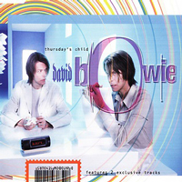
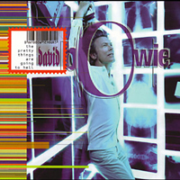
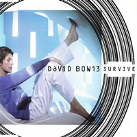
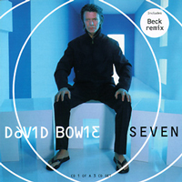

Bowie's dabble with drum'n'bass had been invigorating but also intense, so it was no surprise to see an Earthling-era Bowie looking spent on the cover of his follow-up album, 'hours ...' Picturing his past self cradled in the arms of a youthful-looking, longer-haired Bowie revitalised by yet another artistic rebirth, the album cover's Christian symbolism nodded to Michelangelo's late 15th-century sculpture La Pietà, and also reflected the themes of loss and mortality that Bowie, then in his 50s, explored on the record. "We came up with a few different concepts, all with a religious motif," photographer Tim Bret-Day told Mojo of what became one of the best David Bowie album covers of the '90s, adding. "Deep down, he doesn't particularly want to talk about the past or hear his own records. He's not interested in anything prior to what he's doing today."
Photographers: Tim Bret-Day
THURSDAY'S CHILD
All of my life I've tried so hard
Doing my best with what I had
Nothing much happened all the same
Something about me stood apart
A whisper of hope that seemed to fail
Maybe I'm born right out of my time
Breaking my life in two
Throw me tomorrow
Now that I've really got a chance
Throw me tomorrow
Everything's falling into place
Throw me tomorrow
Seeing my past to let it go
Throw me tomorrow
Only for you I don't regret
That I was Thursday's child
Monday, Tuesday, Wednesday born I was
Monday, Tuesday, Wednesday born I was
Sometimes I cried my heart to sleep
Shuffling days and lonesome nights
Sometimes my courage fell to my feet
Lucky old sun is in my sky
Nothing prepared me for your smile
Lighting the darkness of my soul
Innocence in your arms
Throw me tomorrow
Now that I've really got a chance
Throw me tomorrow
Everything's falling into place
Throw me tomorrow
Seeing my past to let it go
Throw me tomorrow
Only for you I don't regret
That I was Thursday's child
Monday, Tuesday, Wednesday born I was
Thursday's child
Monday, Tuesday, Wednesday born I was
Thursday's child
Monday, Tuesday, Wednesday born I was
Monday, Tuesday, Wednesday born I was
Monday, Tuesday, Wednesday born I was
Monday, Tuesday, Wednesday born I was
SOMETHING IN THE AIR
Your coat and hat are gone
I really can't look at your little empty shelf
A ragged teddy bear
It feels like we never had a chance
Don't look me in the eye
We lay in each others arms
But the room is just an empty space
I guess we lived it out, something in the air
We smiled too fast then can't think of a thing to say
Lived with the best times
Left with the worst
I've danced with you too long
Nothing left to say
Let's take what we can
I know you hold your head up high
We've raced for the last time
A place of no return
And there's something in the air
Something in my eye
I've danced with you too long
Something in the air
Something in my eye
Abracadoo - I lose you
We can't avoid the clash, the big mistake
Now we're going to pay and pay
The sentence of our lives
Can't believe I'm asking you to go
We used what we could to get the things we want
But we lost each other on the way
I guess you know I never wanted
Anyone more than you
Lived all our best times
Left with the worst
I've danced with you too long
Say what you will
But there's something in the air
Raced for the last time
Well I know you hold your head up high
There's nothing we have to say, there's nothing in my eyes
But there's something in the air
Something in my eye
I've danced with you too long
There's something I have to say
There's something in the air
Something in my eye
I've danced with you too long
SURVIVE
Got oh my, naked eyes
I should have kept you
I should have tried
I should have been a wiser kind of guy
I miss you
Give me wings
Give me space
Give me money for a change of face
These noisy rooms and passion pants
I loved you
Where's the morning in my life?
Where's the sense in staying right?
Who said time is on my side?
I've got ears and eyes and nothing in my life
But I survive your naked eyes
I'll survive
You alone across the floor
You and me and nothing more
You're the great mistake I never made
I never lied to you, I hated when you lied
But I'll survive your naked eyes
I'll survive
Beatle boys, all snowy white
Razzle dazzle clubs every night
Wish I'd sent a Valentine
I love you
I'll survive
Naked eyes
I'll survive
I'll survive
My naked eyes
I'll survive
IF I'M DREAMING MY LIFE
Was she never there?
Was she ever?
Was it air she breathed?
At the wrong time
All the flowers so
From the gallery
With the hymns of night
Singing "Come to me"
At the wrong time
On the wrong day
All the lights are fading now
If I'm dreaming all my life
If I'm dreaming all my life
Just one living chance
When the mother sighs
When the father steps aside
At the wrong time
Oh-oh
At the wrong time
On the wrong day
All the lights are fading now
If I'm dreaming all my life
If I'm dreaming all my life
Was she ever?
Was she ever here?
If I'm dreaming all my life
If I'm dreaming all my life away
Dreaming my life
Dreaming my
Dreaming my
Dreaming my
Dreaming my life
Dreaming my life away
Dreaming my life
Dreaming my
Dreaming my life away
Oh-oh
SEVEN
I forgot what my father said
I forgot what he said
I forgot what my mother said
As we lay upon your bed
A city full of flowers
A city full of rain
I got seven days to live my life
Or seven ways to die
I forgot what my brother said
I forgot what he said
I don't regret anything at all
I remember how we wept
On a bridge of violent people
I was small enough to cry
I got seven days to live my life
Or seven ways to die
Hold my face before you
Still my trembling heart
Seven days to live my life
Or seven ways to die
The gods forgot they made me
So I forgot them too
I listen to the shadows
I play among their graves
My heart was never broken
My patience never tried
I got seven days to live my life
Or seven ways to die
Seven days to live my life
Or seven ways to die
Seven
Seven
Seven
Seven
Seven
Seven
Seven
Seven
Seven
WHAT'S REALLY HAPPENING
Grown inside a plastic box
Micro thoughts and safety locks
Hearts become outdated clocks
Ticking in your mind
Now it's time to close our eyes
Now it's time to say goodbye
Now it's time to face the lie
That we'd never cry
What's really happening?
What tore us apart?
What's really happening?
What's really happening?
What tore us apart?
What's really happening?
All the clouds are made of glass
And they're slowly sinking
Falling like the shattered past
Were we built to last?
What's really happening?
What tore us apart?
What's really happening?
What's really happening?
What tore us apart?
What's really happening?
Now it's time to close our eyes
Now it's time to say goodbye
Now it's time to face the lie
That we'd never cry
What's really happening?
What tore us apart?
What's really happening?
What's really happening?
What tore us apart?
What's really happening?
THE PRETTY THINGS ARE GOING TO HELL
What to do?
What to say?
What to wear on a sunny day?
Who the phone?
Who to fight?
Who to dance with on a Sunday night?
I'm reaching the very edge you know
Reaching the very edge
I'm going to the other side this time
Reaching the very edge
You're still breathing but you don't know why
Life's a bit and sometimes you die
You're still breathing but you just can't tell
Don't hold your breath
But the pretty things are going to hell
I am a drug, I am a dragon
I am the best jazz you ever seen
I am the dragon, I am the sky
I am the blood at the corner of your eye
I found the secrets I found gold
I find you out before you grow old
I find you out before you grow old
What is eternal? What is damned?
What is clay and what is sand?
Who to diss? Who to trust?
Who to listen to? Who to suss?
I'm reaching the very edge you know
Reaching the very edge
I'm going to the other side this time
Reaching the very edge
You're still breathing but you don't know why
Life's a bit and sometimes you die
You're still breathing but you just can't tell
Don't hold your breath
But the pretty things are going to hell
I am the dragon, I am the drug
I am your best jazz you've ever heard
I am the dragon, I'm the sky
I am the blood at the corner of your eye
I found the secrets I found gold
I found you out before you grow old
I found you out before you grow old
The pretty things are going to hell
They wore it out but they wore it well
The pretty things are going to hell
They wore it out but they wore it well
The pretty things are going to hell
They wore it out but they wore it well
The pretty things are going to hell
They wore it out but they wore it well
You're still breathing but you don't know why
You're still breathing but you just can't tell
Don't hold your breath
But the pretty things are going to hell
NEW ANGELS OF PROMISE
New Angels of Promise
We despair
We are the dead dreams
We take the blame
Take us to the edge of time
Take us to the edge of time
We are the fabulous lovers
I'm a blind man and she's my eyes
Suspicious minds
You didn't feel us coming
In this lonely crowd
It's always time
Suspicious minds
You didn't feel us coming
In this lonely crowd
It's always time
New Angels of Promise
We despise
Don't fall apart now
We are the silent ones
Take us to the edge of time
Take us to the edge of time
We are the tabular lovers
We listen to the storm
Suspicious minds
You didn't feel us coming
In this lonely crowd
It's always time
Suspicious minds
You didn't feel us coming
In this lonely crowd
It's always time
New Angels of Promise
We despair
We are the dead dreams
We take the blame
Take us to the edge of time
Take us to the edge of time
We are the fabulous lovers
I'm a blind man and she's my eyes
Suspicious minds
You didn't feel us coming
In this lonely crowd
It's always time
Suspicious minds
You didn't feel us coming
In this lonely crowd
It's always time
Suspicious minds
You didn't feel us coming
In this lonely crowd
It's always time
It's always time
It's always time
It's always time
BRILLIANT ADVENTURE
(Instrumental)
THE DREAMERS
Black eyed ravens
They spiral down
They tilt his head back
To the flame filled sunset
Raise their guns high
As the darken falls
These are the days boys
Shallow man
Shallow man... and they
Eats in the doorway
With his head inclined
And he's always in decline
No-one heals anymore
So he shrinks as they ride
Under vermilion sky
So it goes
Just a searcher
A lonely soul
The last of the dreamers
Shallow man
Shallow man
Speaks to the shadows
Moves his trembling hands
And he's always a little late
For the dawning of the day
So it goes
Just a searcher
A lonely soul
The last of the dreamers
SINGLES



